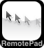

RemotePad for iPhone
Prepare to use RemotePad for iPhone
- Download RemotePad for iPhone from App Store, and install to your iPhone / iPod touch.
- Download RemotePad Server from Downloads page, and install to your desktop PC.
- If your OS is a UNIX(Linux, variants of BSD, or other UNIX variants), please compile source codes to get a binary program.
Connect RemotePad with RemotePad Server
- Run both RemotePad and RemotePad Server
- Select the RemotePad Server on the RemotePad
- If the RemotePad Server is running on Mac OS X, servers is listed using Bonjour.
- If running Windows or X11, you should enter the server's IP address.
How to use iPhone RemotePad?
- You can move a mouse cursor by touching and dragging on a tap area.
- By default, you can show and hide status bars by single tapping on a tap area (not on status bars).
- By default, you can scroll by touching two fingers and dragging on a tap area.
- There are two buttons in a bottom status bar.
- button that show and hide button set
- setup button
How to quit and uninstall RemotePad Server?
- If you use a server for Windows, please choose "Exit" in an arrow icon on the system tray to quit. To uninstall, delete a file "RemotePad Server.exe". There are no other files to uninstall.
- If you use a server for Mac OS X, please choose "Quit RemotePad" in an arrow icon on the system menubar to quit. To uninstall, delete a file "RemotePad Server.app". There are no other files to uninstall.
- If you use a server for X11, please kill a process named "remotepad". I'm sorry to say that there are no GUI way to quit. To uninstall, delete a file "remotepad" usually located in "/usr/local/bin/".
Setup Options
- Number of buttons
- You can change a number of buttons to 1, 2 or 3.
- Primary mouse button
- You can change a primary button to left or right.
- Use two fingers to scroll
- You can enable or disable two fingers scrolling.
- Allow horizontal scrolling
- You can enable or disable horizontal scrolling.
- Center button scrolling
- If you enable this option, you can scroll by single finger with touching a center button and dragging.
- Clicking
- You can enable or disable mouse clicking with tapping. If you enable this option, `Toggle Statusbar' and `Allow key gestures' options are disabled.
- Dragging
- You can enable or disable mouse dragging with dragging after single tapping.
- Drag Lock
- If you enable this option, mouse dragging will end with single tapping.
- Toggle Statusbar
- You can toggle status bars by single tapping or triple tapping on a tap area, or you can disable this feature.
- This feature is disabled with enabling an option clicking by tapping.
- Arrow key gestures
- You can input an arrow key by simple dragging or dragging after single tapping on a tap area, or you can disable this feature. If you choose 'Single-Click', you cannot move mouse cursor by touching and dragging.
- This feature is disabled with enabling an option clicking by tapping.
- Mouse moving by Accelerometer
- If you enable this option, you can move mouse cursor with touching and tilting iPhone or iPod touch.
- Reset button location
- You can relocate button set with dragging after triple-click. This button clear the button set location to the top.
- Disconnect this session
- You can disconnect this session and return to the initial view.
Copyright © 2008, 2009 tenjin.org All rights reserved. RemotePad-request@tenjin.org